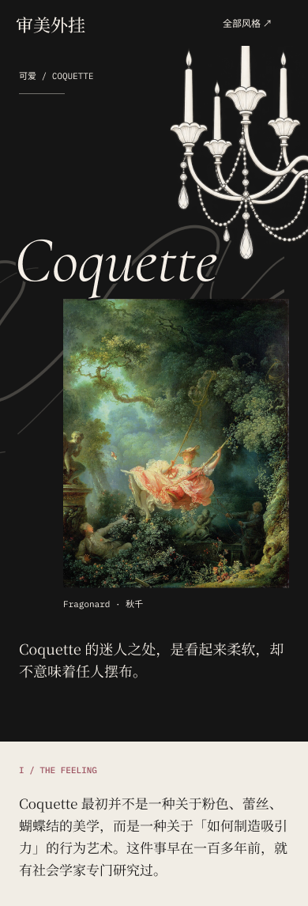

<!doctype html>
<html lang="zh-CN">
<meta charset="utf-8">
<meta name="viewport" content="width=device-width,initial-scale=1,viewport-fit=cover">
<title>Coquette · 灯下阅读与风格图版</title>
<link rel="stylesheet" href="reader.css">
<main id="reading" class="reader">
  <figure class="opening" aria-label="Coquette 词条开场：白色吊灯、《秋千》与引言">
    
  </figure>
  <div class="plate-entry">
    <span class="folio" aria-hidden="true">图版 / 01</span>
    <button id="open-board" type="button" aria-haspopup="dialog" aria-controls="plate">看风格拼贴 <span aria-hidden="true">↗</span></button>
  </div>
  <section class="prose" aria-label="词条正文">
    <p>Coquette 最初并不是一种关于粉色、蕾丝、蝴蝶结的美学，而是一种关于「如何制造吸引力」的行为艺术。这件事早在一百多年前，就有社会学家专门研究过。</p>
    <a class="to-top" href="#reading">回到开篇 ↑</a>
  </section>
</main>
<dialog id="plate" aria-labelledby="plate-label">
  <header class="plate-bar">
    <span id="plate-label">风格拼贴 <span class="plate-count">/ 01</span></span>
    <button id="close-board" autofocus type="button">收回图版 <span aria-hidden="true">×</span></button>
  </header>
  <iframe id="board-frame" title="完整 Coquette 风格拼贴与图像来源" src="board/index.html"></iframe>
</dialog>
<script src="reader.js"></script>
</html>
